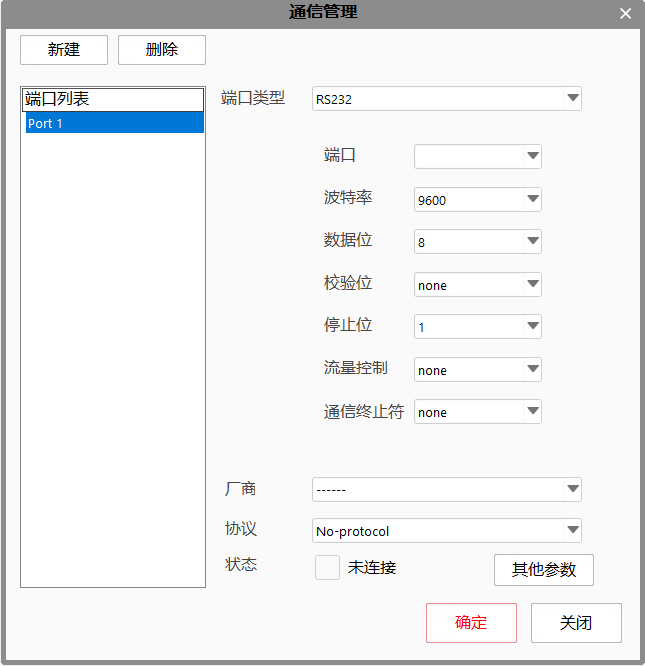
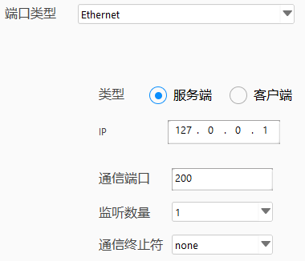
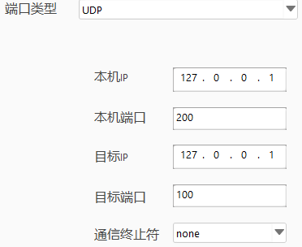
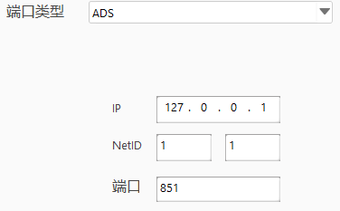
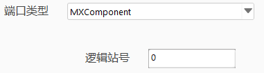
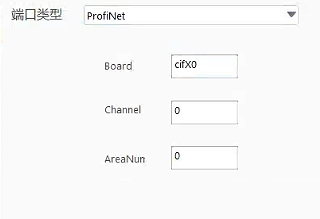
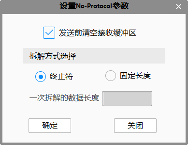
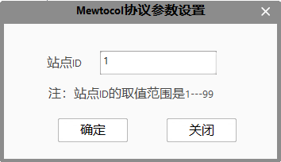
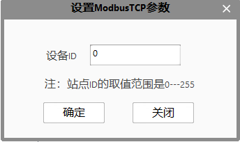
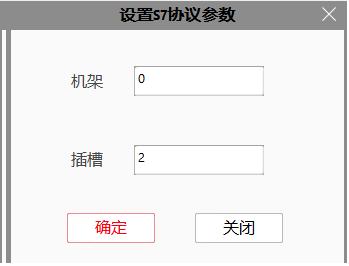

Các cổng truyền thông (cổng nối tiếp, cổng mạng) được sử dụng trong dự án có thể được thiết lập và quản lý thông qua mục “Quản lý truyền thông” trong phần “Khu chức năng - Cài đặt”.

Danh sách cổng: Hiển thị tên cổng, tên mặc định là Port+N;
Thông số chung của cổng
Loại cổng: RS232 (cổng nối tiếp), Ethernet (cổng mạng) và MXComponent;
Nhà sản xuất: Chọn loại nhà sản xuất phù hợp theo tình hình thực tế; mục này chỉ là chức năng lọc, không ảnh hưởng đến nội dung cụ thể của giao thức. Có thể chọn các hãng như Keyence, Panasonic, Omron, OPT, Jiali, Linhou, Mitsubishi, Schneider Electric.
Giao thức: Chọn loại giao thức phù hợp theo nhu cầu thực tế;
Trạng thái: Chưa kết nối / Đã kết nối;
Thông số cổng nối tiếp
Cổng: Chọn cổng hiện được nhận dạng;
Tốc độ baud: Đơn vị tốc độ truyền là bps, biểu thị số bit dữ liệu có thể truyền trong một giây. Các bit dừng và bit kiểm tra chẵn lẻ đều được xác định dựa trên tốc độ này. Ví dụ, khi đặt 9600bps, có thể truyền khoảng 1000 ký tự số tiếng Anh trong một giây.
Bit dữ liệu: Chỉ độ dài của chuỗi ký tự. Trong giao tiếp RS232, dữ liệu thường được gửi theo đơn vị 7 hoặc 8 bit cho mỗi ký tự, trong đó 8 bit là phổ biến nhất.
Bit kiểm tra chẵn lẻ: Là bit thêm vào để kiểm tra xem dữ liệu có được gửi bình thường không. Có thể chọn kiểm tra chẵn, kiểm tra lẻ hoặc không kiểm tra. Thông qua bit này có thể điều chỉnh để dữ liệu gửi đi là chẵn hoặc lẻ. n: không kiểm tra; o: kiểm tra chẵn; e: kiểm tra lẻ.
Bit dừng: Mỗi ký tự sẽ có bit bắt đầu và bit dừng để đánh dấu phần đầu và phần cuối. Bên nhận sẽ dựa vào bit bắt đầu để xác định phần đầu của ký tự và nhận dữ liệu chính xác; phần cuối sẽ dùng bit dừng để báo hiệu kết thúc dữ liệu. Bit bắt đầu luôn là 1 bit, còn bit dừng có thể là 1 hoặc 2 bit.
Điều khiển luồng: Khi bên nhận không kịp xử lý dữ liệu, nó sẽ gửi tín hiệu “ngừng nhận”, khiến bên gửi tạm dừng truyền cho đến khi nhận được tín hiệu “có thể gửi tiếp”.
Ký tự kết thúc truyền thông: Để tránh lỗi khi một lệnh bị tách ra và nhận thành nhiều phần, hai bên truyền thông quy ước ký tự kết thúc dùng để đánh dấu sự kết thúc của một lệnh truyền thông.
Thông số cổng mạng

Loại: Gồm hai loại “Máy chủ (Server)” và “Máy khách (Client)”;
IP: Thiết lập địa chỉ IP truyền thông. Nếu loại mạng là “Máy chủ”, thì IP là địa chỉ cục bộ; nếu là “Máy khách”, thì địa chỉ IP phải trùng với địa chỉ IP của máy chủ;
Cổng truyền thông: Giá trị cổng phải là số nguyên dương. Để tránh cổng bị chiếm dụng, thường đặt giá trị lớn, chẳng hạn 2000. Nếu loại mạng là “Máy chủ”, cổng được đặt thành số nguyên dương lớn; nếu là “Máy khách”, cổng phải trùng với cổng của máy chủ;
Số lượng kết nối lắng nghe: Khi làm máy chủ, có thể hỗ trợ nhiều máy khách kết nối cùng lúc;
Ký tự kết thúc truyền thông: Dấu hiệu kết thúc của lệnh truyền thông;
Thông số UDP

IP cục bộ: Địa chỉ IP của cổng mạng giao tiếp với PLC. Cũng có thể đặt là 127.0.0.1, hệ thống sẽ tự động khớp.
Cổng cục bộ: Số hiệu cổng của máy tính, thường đặt lớn hơn 1024.
IP đích: Địa chỉ IP của thiết bị PLC.
Cổng đích: Số hiệu cổng được PLC sử dụng để giao tiếp.
Ký tự kết thúc truyền thông: Dấu hiệu kết thúc của lệnh truyền thông.
Thông số ADS

Thông số MXComponent
MXComponent là thành phần truyền thông của Mitsubishi, thông qua cấu hình mô-đun truyền thông trong phần mềm Mitsubishi để thực hiện giao tiếp.
Trạm logic: ID cổng truyền thông, được cấu hình trong phần mềm Mitsubishi Component;

Thông số ProfiNet

Truyền thông ProfiNet cần phần cứng đặc biệt hỗ trợ, hiện chỉ hỗ trợ card CIFX 50-RE. Tức là chỉ khi máy tính công nghiệp tích hợp card này mới có thể truyền thông ProfiNet bình thường.
Board: Mặc định là cifX0. Đối với card CIFX 50-RE, không cần thay đổi; mở tùy chọn này nhằm dự phòng tích hợp các mẫu card khác của cùng hãng trong tương lai.
Channel: Mặc định là 0, không cần thay đổi đối với card CIFX 50-RE.
AreaNum: Mặc định là 0, không cần thay đổi đối với card CIFX 50-RE.
Nút thao tác
Tạo mới: Tạo một cổng mới;
Xóa: Xóa cổng được chọn;
Đồng ý: Lưu cài đặt hiện tại và thoát quản lý truyền thông;
Đóng / ×: Hủy thao tác hiện tại và thoát quản lý truyền thông.
Các thông số khác
Mỗi giao thức có các thông số đặc biệt riêng. Các giao thức này gồm: No-protocol trong cổng RS232, No-protocol trong cổng Ethernet, Mewtocol và ModbusTCP.
Cài đặt thông số No-protocol
Xóa bộ đệm nhận trước khi gửi: Khi công cụ gửi dữ liệu, xóa dữ liệu trong bộ đệm nhận trước đó.
Phương thức tách dữ liệu: Vì No-protocol có thể gửi/nhận dữ liệu với độ dài tùy ý, để phân biệt các gói dữ liệu khác nhau cần có phương thức tách. Gồm tách theo ký tự kết thúc hoặc tách theo độ dài cố định.
Tách theo ký tự kết thúc: Nhận dạng và tách gói dữ liệu dựa trên ký tự kết thúc được thiết lập trong giao diện quản lý truyền thông.
Tách theo độ dài cố định: Nhận dạng và tách gói dữ liệu dựa theo giá trị được đặt trong “Độ dài dữ liệu tách mỗi lần”.

Cài đặt thông số Mewtocol
Trong giao thức Mewtocol, để phân biệt nhiều thiết bị trên cùng một bus, có tham số ID trạm. Phạm vi cài đặt của tham số này là từ 1 đến 99.

Cài đặt thông số ModbusTCP
Trong giao thức ModbusTCP, để phân biệt nhiều thiết bị trên cùng một bus, có tham số ID thiết bị.

Giá đỡ (Rack): Số thứ tự của CPU PLC (0–100, mặc định 0)
Khe cắm (Slot): Số thứ tự của mô-đun CPU (0–100, mặc định 2)

| Giao thức | Hãng PLC | Giao thức đóng gói phần mềm | Vùng dữ liệu được hỗ trợ | Kiểu dữ liệu | Ghi chú |
|---|---|---|---|---|---|
| MX Component | Mitsubishi | MxComponent | M, D, X, Y | bool, short, int, long, float, double |
D, X, Y chỉ hỗ trợ đọc/ghi tại một địa chỉ đơn lẻ |
| FINSTCP | Omron | HostlinkFINS_TCP | DM, DM_Bit, CIO, CIO_Bit, WR, WR_Bit, HR, HR_Bit, DR, IR |
bool, short, unsigned short, int, unsigned int, long, unsigned long, float, double, string |
Không có |
| FINSUDP | Omron | HostlinkFINS_UDP | DM, DM_Bit, CIO, CIO_Bit, WR, WR_Bit, HR, HR_Bit, DR, IR |
bool, short, unsigned short, int, unsigned int, long, unsigned long, float, double, string |
Không có |
| Giao thức | Hãng PLC | Giao thức đóng gói phần mềm | Vùng dữ liệu được hỗ trợ | Kiểu dữ liệu | Ghi chú |
| KeyenceSWLU | Keyence | KeyenceSWLU | DM, EM, W, TM, CM, VM, R, B, MR, LR, CR, VB |
bool, short, int, long, float, double, unsigned short, unsigned int, unsigned long, string |
Giao thức này là giao thức liên kết cấp trên (Upper Link Communication Protocol) |
| ModbusTCP | Schneider | ModbusTCP | Thanh ghi giữ (4x), cuộn dây | bool, short, int, long, float, double, string |
Hiện chưa hỗ trợ đầu vào rời rạc và thanh ghi đầu vào; kiểu dữ liệu string chỉ có hiệu lực với thanh ghi, không có hiệu lực với đầu vào rời rạc và cuộn dây |
| ModbusRTU | Schneider | ModbusRTU | Thanh ghi giữ (4x) | bool, short, int, long, float, double |
Hiện chưa hỗ trợ cuộn dây, đầu vào rời rạc, thanh ghi đầu vào |
| ModbusASCII | Schneider | ModbusASCII | Thanh ghi giữ (4x) | bool, short, int, long, float, double |
Hiện chưa hỗ trợ cuộn dây, đầu vào rời rạc, thanh ghi đầu vào |
| MEWTOCOL | Panasonic | Mewtocol | N/A | bool, short, int, long, float, double |
Không có |
| ADS | Beckhoff | ADS | N/A | bool, short, int, long, float, double |
Không có |
| S7Comm | Siemens | S7Comm | I, M, Q, DB | bool, short, int, long, float, double, unsigned short, unsigned int, unsigned long, string | Khi sử dụng kiểu string, địa chỉ bị lệch về sau 2 byte |
| ProfiNet | HILSCHER | ProfiNet | I, Q | bool, char, short, int, long, double, float, unsigned short, unsigned int, unsigned long, string | Đối với thị giác máy (vision), vùng I chỉ ghi, vùng Q chỉ đọc, giao tiếp này cần phần cứng đặc biệt, hiện chỉ hỗ trợ thẻ CIFX 50-RE |